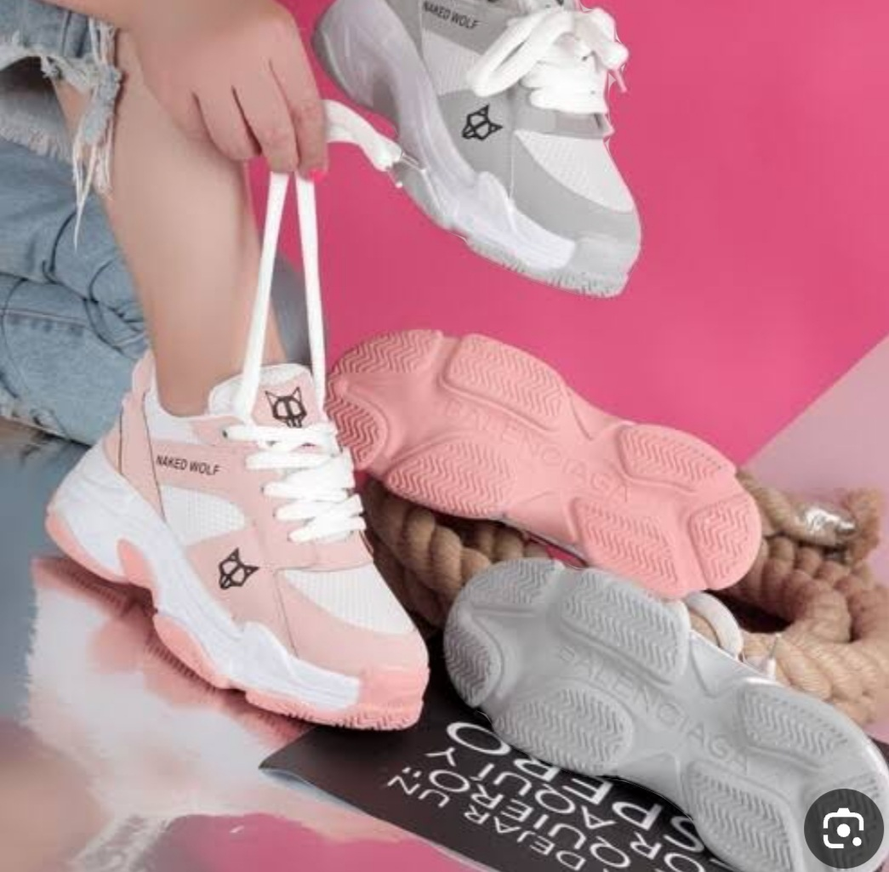

Use promo code 20OFF to get 20% off!
Shoe style
price:$29.99
⭐⭐⭐⭐⭐ 4.8/5 15,434 reviews
- Abaca slippers are made from dried abacá plants and leaves, as well as sometimes from dried pineapple plant leaves. Abaca slippers may be found in the Davao and Mindanao regions of the Philippines and are sold at many markets in the Philippines
- The abarka (Basque), abarca or albarca (Spanish), avarca (Catalan) is the traditional footwear in Pyrenees. This sandal made in one piece of calf leather is tied by braided wool laces around the socks. alpargata, is a derivative Mozarab al-párğa pl. al-parğāt of abarka
- Nike Air Force is a range of athletic shoes made by Nike. It was created by designer Bruce Kilgore[1] and was the first basketball shoe to use Nike's "Air" technology.[2] The shoe is offered in low-, mid- and high-top styles.
- The avarca (Catalan pronunciation: [əˈβaɾkə], plural avarques) is a type of sandal popular in the Balearic Islands (Spain), especially Menorca. The shoes are made using a leather upper and a rubber sole.[1] Avarca is a traditional sandal originally developed in Menorca in the Balearic Islands.This label is granted by local Government and guarantees that avarcas accomplishes minimum quality standards and avarcas are really manufactured in Menorca island